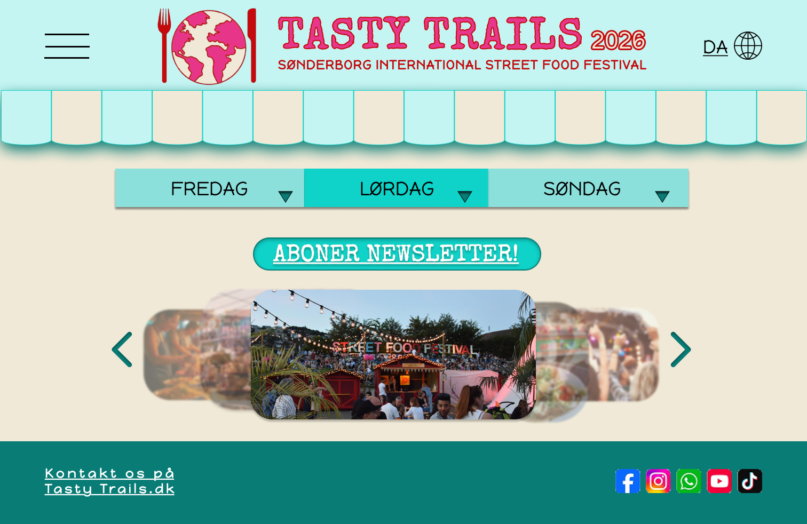
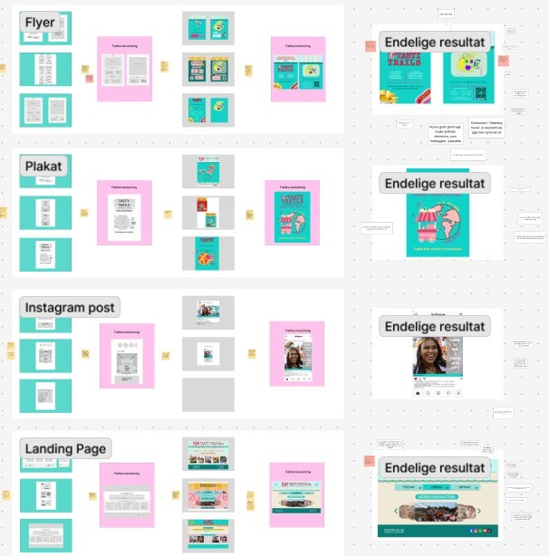

Værktøjer: Figma Design & FigJam
Projektbeskrivelse
Formålet med projektet var at udvikle en visuel identitet for
Sønderborg International Street Food Festival – en fiktiv event, der fejrer
mangfoldighed gennem mad, musik, kultur og
fællesskab.
Festivalen samler lokale, studerende og internationale borgere omkring madoplevelser fra hele verden og ønsker at skabe et tilbagevendende event med fokus på fællesskab og kulturudveksling.
“Tasty Trails – En smag af fællesskab”
Det begyndte med en tanke — at mad kunne være mere end smag. At et måltid kunne være et møde. Et øjeblik, hvor verden blev lidt mindre, og Sønderborg lidt større. Vi skulle skabe en visuel identitet til Sønderborg International Street Food Festival — en fiktiv festival, men med et ægte hjerte. En fejring af mad, kultur og fællesskab. Vi var tre i teamet — Bettina, Tamara og mig. Sammen gik vi ind i projektet med åbne sind og nysgerrige hænder, bevæbnet med Figma og FigJam, men endnu vigtigere: med lysten til at fortælle en historie gennem design.
Format
Alle produkter skulle tydeligt afspejle vores brand og visuelle identitet. Projektet omfattede:
- En plakat
- En flyer
- En landing page
- Et opslag til sociale medier
"Collage af tre produkter"
Formål med opgaven
- Grafiske principper (farver, typografi, komposition og hierarki)
- Kommunikation og budskabsformidling
- Branding og udvikling af en visuel identitet
- Iterativ designproces og feedback
Designets formål
- Fremhæve Sønderborgs internationale profil og styrke fællesskabet
- Tiltrække både lokale, turister og studerende
- Skabe en genkendelig branding for en tilbagevendende festival
Festivalen varer en weekend og byder på madboder fra hele verden, live-musik og workshops.
"Billede af webside"
Logo og navn
Navn: TASTY TRAILS - Sønderborg International Street Food Festival
Vi ønskede, at navnet skulle være nemt at huske, men samtidig udtrykke festivalens internationale og
mangfoldige karakter.
Vi kaldte festivalen “Tasty Trails” – en rejse gennem smag og kultur.
Navnet skulle føles let på tungen, men efterlade et indtryk.
Logoet blev designet ud fra enkelhed, genkendelighed og et udtryk der signalerer verden og mad.
"Billede af logoet"
Metodisk tilgang
Arbejdsproces
Vi arbejdede ud fra en iterativ designproces:
Divergent → individuelt | Konvergent → fælles
Vi arbejdede iterativt. Først individuelt — hvor idéer fik lov at flyde frit. Derefter i fællesskab, hvor vi samlede trådene, formede udtryk og tog beslutninger. Vores proces blev ikke bare en vej mod et produkt, men en læring i at lytte, forfine og forstå.
"Billede af vores Arbejdsproces"
Moodboard, Style Tile & Persona
- Klar branddefinition og visuel konsistens
- Gennemtænkte farver, typografi og hierarki
- Iterativ udvikling og feedback
Hvert design — plakat, flyer, landingpage og SoMe-opslag — skulle bære samme stemme:
En stemme af fællesskab, af globalt møde og lokal stolthed.
Et design, hvor Sønderborgs varme og verdenens mangfoldighed smeltede sammen.
"Billede af moodboard og farvepalette"
Lo-Fi Prototyping
- Discovery – brugerbehov og input
- Interpretation – definere udfordringer
- Ideation – udvikle idéer og skitser
- Experimentation – low-fidelity prototype
- Evolution – forbedre ud fra feedback
De første skitser var rå og legende — streger, former og noter. Vi testede, justerede, og gradvist voksede vores idé frem til en hi-fi prototype i Figma.
"Billede af vores 3 Lo-Fi skitser (websides)"
Hi-Fi Prototype i Figma
Den færdige prototype blev udviklet som en interaktiv Figma-løsning.
Et levende design, der ikke kun så flot ud, men føltes rigtigt. For os handlede det ikke kun om
æstetik — det handlede om stemning.
Om at skabe en visuel oplevelse, der inviterede folk ind i et fællesskab.

"Billede af vores 3 Hi-Fi prototype skitser (flyer)"
Refleksion
Projektet gav en dybere forståelse for den iterative designproces og vigtigheden af at dokumentere beslutninger og tests løbende. Planlægning og struktur skaber bedre kreative resultater.
"Billede af vores præsentation"
Videreudvikling af visuel identitet
Refleksion og udvikling - jeg begyndte med spørgsmål:
Hvordan føles smagen af verden? Hvilke farver dufter af chili, mango og friskbagt brød?
Mit moodboard blev hurtigt en rejse i farver og teksturer — varme toner, glade kontraster og en
visuel rytme,
der emmede af liv og nærvær. I det første projekt brugte vi clipart som bærende visuel stil.
I videreudviklingen af landingpagen arbejdede jeg med varmere farver og autentiske billeder for at
skabe et mere menneskeligt og
stemningsfuldt udtryk.